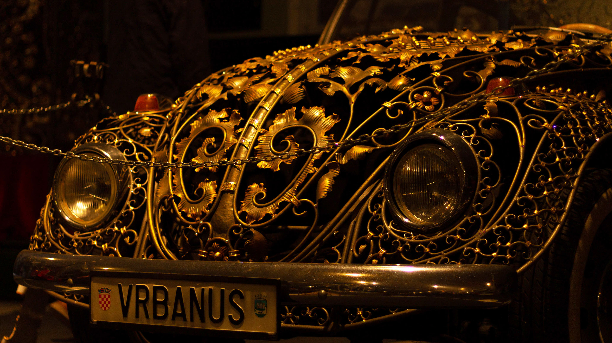
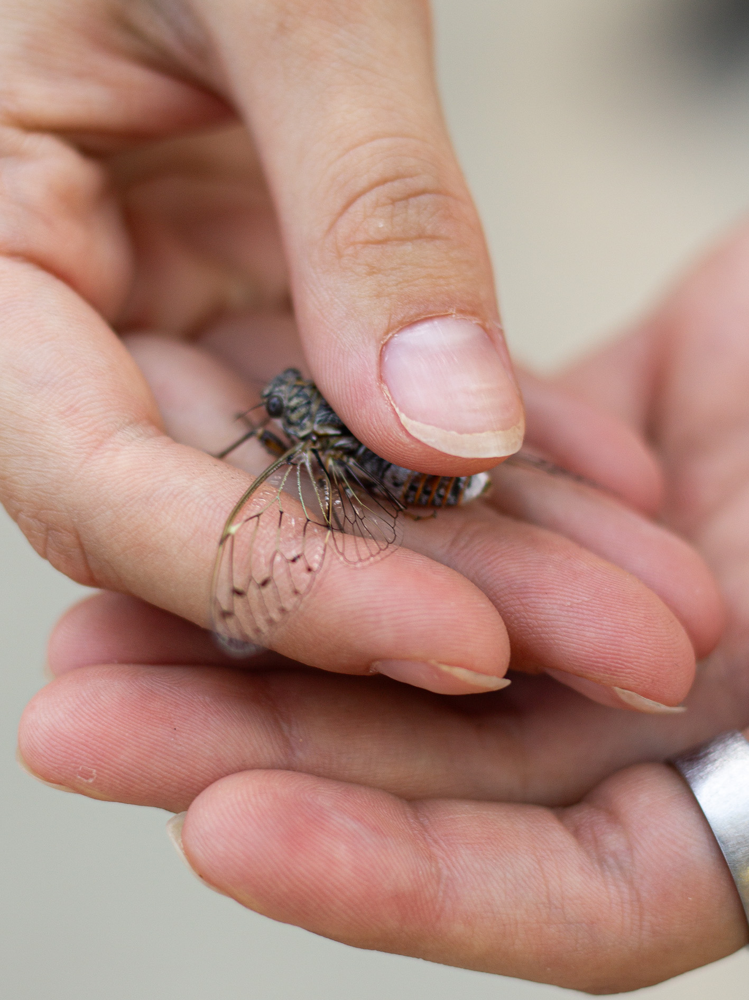

Muted colors blend with soft purple undertones, creating a moody
atmosphere that emphasizes expression and movement over the spectacle.
The vibrant colors of the lights pulse with the rhythm of the music,
capturing the energy of every beat and every movement on stage.
From forests to backyards, nature in its purest form
The world is full of life, textures, and wonder. These images explore
the delicate balance of wildlife and the beauty of natural landscapes, showing the spontaneity and grace of
animals in their environment.




Timeless Shades
Removing color draws attention to contrast, light, and emotion. These
black-and-white images focus on form and feeling, capturing stories that transcend time and place.


Faces, expressions, and fleeting moments that define us.
Portraits are windows into lives. Every smile, frown, or glance tells
a narrative. This series celebrates human diversity, emotion, and connection — the little moments that make
life extraordinary.


×